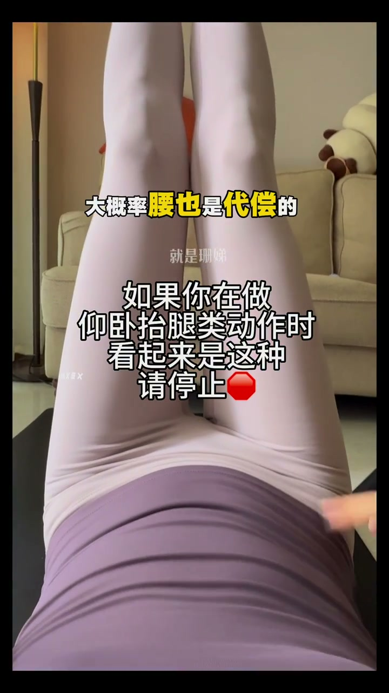
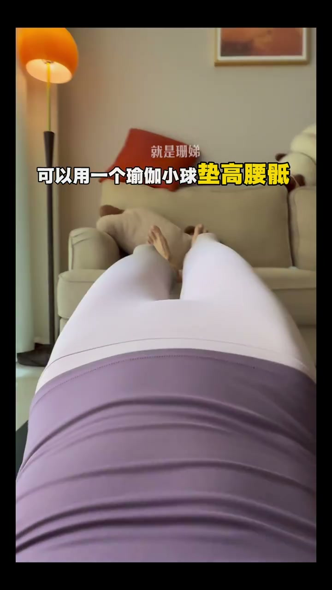
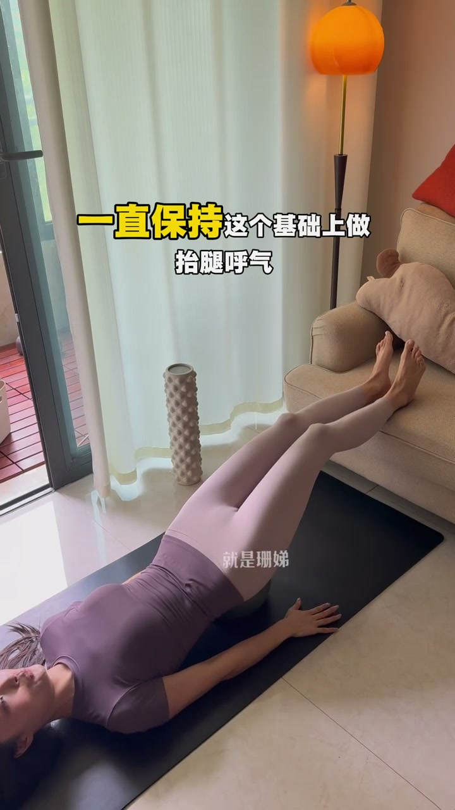

鼓肚子：没练到腹，腰在代偿
00:00如果你在做仰卧抬腿的动作时，腹部明显隆起——像这种请停止。
00:05因为没练到腹，大概率腰也是代偿的——动作练了等于没练，还可能伤腰。
[00:02] 错误：仰卧抬腿时腹部明显隆起
Wrong: the belly visibly bulges during supine leg raises

[00:06] 鼓肚子=没练到腹，腰在代偿
A bulging belly means the abs weren't worked — the lower back is compensating
瑜伽小球垫腰 + 呼气收腹
00:07可以用一个瑜伽小球垫高腰底——把腰稳住，给腰部支撑。
00:10呼气，先收紧腹部，收完摸起来是硬硬的——确认腹肌真的在发力。

[00:09] 瑜伽小球垫高腰底
A small yoga ball props up the lower back
[00:13] 呼气收紧腹部，摸起来硬硬的
Exhale and tighten the abdomen until it feels firm
保持收腹做抬腿
00:14腹部一直保持收紧，在这个基础上做抬腿——抬腿呼气，下落吸气。
00:20这个方法对改善腹直肌分离、悬垂腹、腹内压过大都很有效果。

[00:16] 保持收腹做抬腿：抬腿呼气，下落吸气
Keep the belly pulled in while raising the leg: exhale on the lift, inhale on the way down
仰卧抬腿的标准不是抬得高，而是全程不鼓肚子——呼气收腹、瑜伽小球垫腰，腹直肌分离和悬垂腹都能改善。